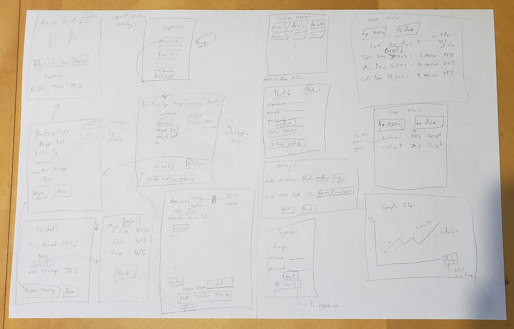
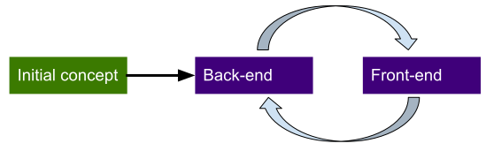
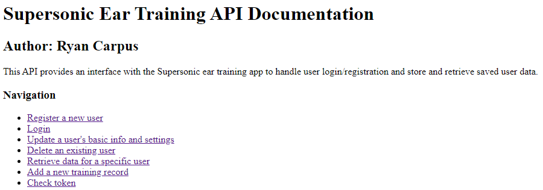
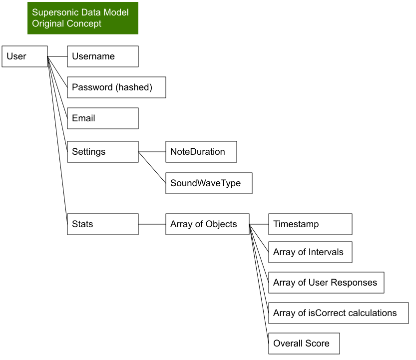
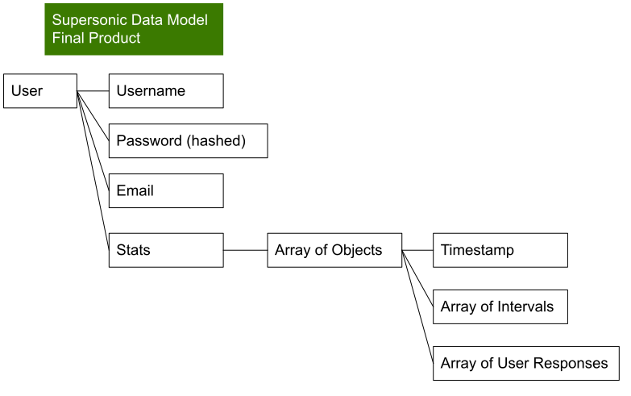
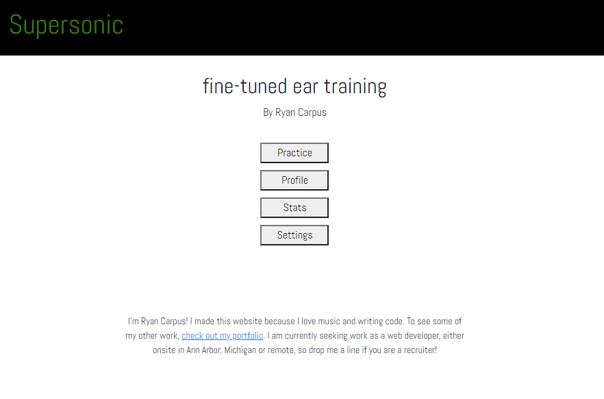

NOTE: Following the removal of the Heroku Free Tier, this application is currently broken until I upgrade to a paid plan or find a different back-end provider.
The challenge
There are many ear training apps available for musicians to learn to hear the difference between different melodic intervals. However, there are no apps that train musicians to hear if a given interval is in tune or not. My goal was to create a web application to do just that—Let musicians practice hearing intervals that are slightly out of tune to sharpen their ears and improve their overall musicianship. This project was built over three weeks as a personal passion project.
The process
Using JavaScript’s Web Audio API to generate tones, I built a full-stack web application using the MERN stack (Mongo, Express, Node, React) that generates customizable musical training sessions for the user and saves the results to the server.
The goal
A gamified web application enabling musicians to sharpen their listening skills and track their performance over time with lessons tailored to the user’s needs.
My development process
Planning and Design
This project came about as a result of my own personal desire as a musician to have an app that would let me practice hearing the “in-tuneness” of notes. These are the user stories that guided my through development.
- As a user, I want to be able to create an account so my practice data can be saved and accessed from any of my devices.
- As a user, I want to be able to take a practice “quiz” on a series of musical intervals so I can practice identifying whether notes are in tune or not.
- As a user, I want to be able to customize my practice session by selecting a difficulty, interval type, interval direction, starting note, and number of intervals so I can have a practice session tailored to my learning needs.
- As a user, I want to be able to update my settings so that the notes I hear will have a different wave form or duration during my practice sessions.
- As a user, I want to be able to update my personal information so that my account is always up to date.
- As a user, I want to be able to view an aggregation of my user data so I can track my performance over time.
I knew what features I wanted the app to app, but I was also aware that without proper planning, this project would become an unmanageable mess. So, I sat down with a pencil and two sheets of paper, and I applied my incredible art skills to draw out the first draft of each screen I expected my final product would have.
Most of these screens even made it to the final product, though they look a bit different (and better, I think)!
With the screens planned out, I was able to form a draft of the data structure used in my database and what API endpoints would be required to perform my CRUD operations. Unlike my user interface, my final database model is actually quite a bit different from what I originally envisioned, but more on that later.
Development Stages
Because I am the sole developer of the project, I knew I would have the option to develop the back-end and front-end simultaneously, but I broke the development process into three phases: initial concept, back-end, and front-end, which turned out to be an iterative process between the back-end and front-end until I was happy with the final product. To help keep these phases separate, I broke my GitHub repository into two main subdirectories, App and Server. This way, the code for the front-end would be separate from the back-end, but it could still all be accessed from a single repository.
Initial Concept
The purpose of the initial concept phase of development was to help me wrap my head around what I would actually need to do, determine if there were any skill gaps that would need to be crossed, and select the right tools for the job. The initial concept also included me producing the beautiful pencil art presented earlier.
Handling Web Audio
Off the bat, I knew I would have to figure out a way to handle audio in my application. This is an ear training application after all! After some research, I decided to build the project using JavaScript’s built-in Web Audio API. There may be useful libraries available that could make my job a bit easier, but because this is my first time working with web audio, I wanted to start out with the basics to get a good foundation.
After reading the docs and running a few test examples, I set out to build my own audio interface to use with my app. Because I was creating a quiz with multiple problems, I built a JavaScript Class called IntervalGroup that randomly generated a collection of Intervals with an answer key when constructed. To hear the intervals played, I created functions that would play individual notes or sequences of notes. All of this was bundled into a module to be exported into my user interface.
At this point, I had crossed the skill gap needed to make my project a reality, but there was still quite a bit of work ahead of me.
Back-End First Pass
I started by setting up a simple server with Express, connected it to my Mongo database, and created the endpoints I thought I would need for my app to do everything it needed to do. This included functions to create a user, login, save training records to the server, update user data, and delete specific types of custom training records. I used a data model which at the time I thought would be appropriate the needs of the front-end app. (I was wrong). I also set up JWT authentication for my endpoints, but I left some security holes in that I knew I would need to deal with later.
At this point, I had created a simple, working API that my front-end could use to access and save user data. It wasn’t perfect, but it didn’t need to be yet.
Front-End First Pass
With a rough draft up my API up-and-running, I set about to make my user interface.
In my planning, I had determined that I was going to build the interface with React, using Redux for state management. I planned on using Redux because the last time I built a React application this big, it became difficult for me to manage state between all of my React components, and I needed a central source of information from which all of my components could share state information. I set up my Redux store and connected all my components to it, and then… never used it.
Why didn’t I use Redux? It was a great tool last time I used it, wasn’t it? The thing is, Redux is great for large applications where the application state is difficult to manage, but in this app, the state was easy to manage because the interactions between my components was planned out in advance. All of the information in my app was passed around in an orderly manner, and nothing got lost in the shuffle. Except, of course, Redux. So Redux was out, and development continued on using just React.
Refining My Data Model
While constructing the basic functionality of the app, I also realized that my data model was not really appropriate for what I wanted to do. These are some of the things I realized about my original data model that would need to be changed.
User settings—My original data model saved the user’s personal settings to the server. These settings include the sound wave type that they want to hear while practicing and the duration of each note they hear. I realized that these settings could just be saved into the browser storage for two main reasons:
- It doesn’t matter if the data gets lost.
- The data is not sensitive user data.
With this revelation, I was able to cut down on unnecessary communications and simplify my data model. Cool!
Training session data—My original data model would have stored calculated information such as whether each submitted answer was correct and what the user’s overall score was for that session. While saving this data to the server would reduce client-side calculations when retrieving data to display aggregate stats, it would also significantly bloat the amount of data saved for each session, potentially leading to slower load times. On the other hand, while forcing the client to recalculate all of these things every time they want to display aggregate data could be considered a waste of computing resources, I’m confident that the calculation speed of my user’s browsers is likely to be faster than downloading all of that additional data from the server.
Back-End Improvements
Having taken a first pass at each part of my project, I had a working app that achieved all my user stories. However, my work was far from over. Here are just some of the things that I knew I’d need to address before calling it quits on this project:
- My API was not secure.
- My API included endpoints that I didn’t need.
- My user interface was not pretty.
- My app didn’t do a good job of guiding new users in how to use it.
As noted above, there were two main issues still to be dealt with on the back end. I’ll dive into those first.
First, my API included endpoints that I didn’t need. For example, I included an endpoint for users to delete data from named custom sessions. I ended up scrapping that idea, so this endpoint was deadweight.
Second, my API was not secure. This was a tricky problem so solve because I do not have a lot of experience with security. The problem was that anybody with a JWT could access any of my API’s endpoints. This means that, although this sort of behavior is not facilitated by the app itself, anybody with a program like Postman could access or change the personal data of another user.
To solve this problem, I modified my endpoints to check the user data encoded in the JWT and check to see if it matches up with the endpoint they are trying to access. If the user info in the JWT doesn’t match the user info they are trying to access, they will be denied access. Each user can only access their own data, just as they would expect.
Front-End Improvements
The remaining issues with my front end were all related to the user experience, not the actual functionality of the application. Here I’ll go over what those issues were and how I resolved them.
Making my User Interface Pretty
They say beauty is in the eye of the beholder, but in this case, the beauty was nonexistent. I’m not going to show you what my app looked like before I took a second shot at the design, but I think it has a sleek, professional look to it now.
When designing the layout, I wanted this app to be mobile-friendly without looking too sparse on desktop. The reality is that given the small scope of this project, there isn’t always a whole lot of information to display on the screen. In fact, the user interface is mostly buttons. I decided to lean into this reality and just allow the screen to be sparse. The result is that the website feels a bit like a mobile app even while on desktop. This is ok. I don’t need to clutter the screen with unnecessary image backgrounds and animations. The user is here to practice their ear training, not admire my art skills.
Giving My Users a Roadmap
I reached out for feedback on my project from a few musician friends, and the feedback was clear. They were initially confused about how to use the app because the practice setup screen had a lot of options, but no explanation on what they mean.
Solving this problem came with some trade-offs to consider. If I added a paragraph of text next to each option header explaining what it meant, it would help newcomers become familiar with the options, but it would become clunky for a regular user of the app to scroll through the options menu each time they wanted to run a session. Eventually, I decided to implement a simple toggle switch to show or hide the directions for setting up the practice session. It allows for a quick, compact interface for regular users while providing a useful guide for newcomers to the app.
Continuous Iteration
With all my main concerns addressed, the app was essentially done. At this point, I continued adding some small pieces here and there and refactoring existing components, jumping between the back-end and front-end as needed to incrementally improve the app. Some additional tweaks I made to the project at this stage include:
- Adding a loading animation when accessing the server.
- Check for stale or invalid JWT on login and log out the user if necessary.
- Refactor the aggregated stats table to be programmatically generated. (This is embarrassing, but I originally hard-coded each line of the table. This refactor erased 500 lines of code.)
Retrospective
I’ve done it! I’ve taken an idea I had for an app that didn’t exist, and I made it happen. I am proud of what I’ve created, and I’ve learned quite a bit along the way. Like many good things though, the work is never really finished. I already have a list of features and improvements I plan to implement in the future. For example, I plan to make the app downloadable as a Progressive Web App. This way, users will be able to use the app while offline. I also plan to look into a better way to handle the audio in my app. It gets kind of buggy on mobile browsers, and I don’t know if it’s because my code is bad or because the Web Audio API has compatibility issues.
I look forward to continuing development on this project, and I sincerely hope that somebody out there can find some value for themselves in my app. If not, oh well. At least now, I have the ear training tool I’ve been wanting for years!